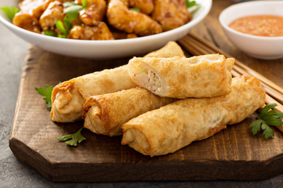

Egg Rolls
Delicious egg rolls with sauce on the side">
Description
An egg roll is a fried appetizer that's found on countless Chinese-American restaurant menus.
It consists of a thick, crispy wheat flour skin filled with shredded cabbage, pork, and other ingredients.
Egg rolls are fried in hot oil, served warm, and delicious dipped in duck sauce or soy sauce.
Ingredients
- 1/2 lb ground pork or chicken (optional)
- 2 cups shredded cabbage
- 1/2 cup shredded carrots
- 1/4 cup chopped green onions
- 2 cloves garlic, minced
- 1 tsp grated ginger
- 1 tbsp soy sauce
- 1 tsp sesame oil
- Salt and pepper
- Egg roll wrappers
- 1 egg, beaten (for sealing)
- Vegetable oil, for frying
Steps
- In a large skillet over medium heat, cook the ground meat until fully browned.
- Add garlic and ginger, stir for 1 minute.
- Stir in cabbage, carrots, and green onions. Cook until veggies soften (3 to 5 mins).
- Add soy sauce, sesame oil, salt, and pepper. Mix well. Remove from heat and let cool.
- Lay an egg roll wrapper like a diamond (point facing you).
- Spoon about 2 tablespoons of filling onto the center.
- Fold the bottom corner over the filling, then fold in the sides.
- Roll tightly toward the top and seal the edge with beaten egg.
- Heat oil in a deep skillet or pot to 350°F (175°C).
- Fry 3–4 egg rolls at a time until golden brown (about 2–3 minutes per side).
- Remove and drain on paper towels.
- Serve hot with sweet chili sauce, soy sauce, or your favorite dip.
Home